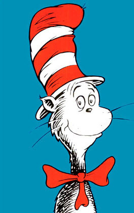

Thu, 09 Dec 2010 08:07:00 · DrSeuss · SocialMedia · SNS · humour
15 witty social media tips from Dr. Seuss

If y'all like me when you were kids [read: partly crazy partly captivating and full time awesome], then you must be familiar with Dr. Seuss’ wittiness. Well, apparently, his cleverly put wisdom also applied for today’s social media.
Here’s one of my fave:
“Being crazy isn’t enough.” - Being a crazy bird isn’t enough. Yes, have humor. However, you need to add value. Don’t just blast craziness! Don’t approach social media like a crazy bird out of the crazy cage. Yes, you may be excited you learned how to tweet, but put some sense into those 140 characters!
If that ain’t witty enough for you, then learn more from Dr. Seuss here.